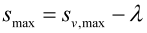
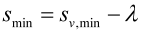

|
|
|


ANSI 92.1 和 ISO 4156/ANSI 92.2M
如果将齿厚公差定义为，则必须考虑以下几点：
- 为整体测量（量规）输入齿厚余量 sv，用于有效齿厚，以适配您用于计算圆柱齿轮的公差体系。
- 单个测量的实际齿厚 s 通过这些方程定义。这些方程适用于轴齿厚或轮毂齿槽。
|  | (38.1) |
|  | (38.2) |
English Original
ANSI 92.1 and ISO 4156/ANSI 92.2M
The following points must be taken into consideration if the tooth thickness tolerance is to be defined as :
- Enter the tooth thickness allowance sv for the Effective tooth thickness for the overall measurement (caliber) to suit the tolerance system that you are using to calculate cylindrical gears.
- The Actual tooth thickness s for single measurements is defined using these equations. These equations apply to the shaft tooth thickness or to the hub tooth space.
| (38.1) | |
| (38.2) |